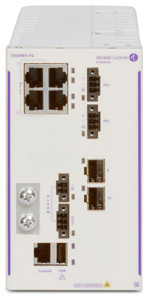

bp-os6465-datasheet

R（触发场景）
- 智能交通、轨道交通、智慧城市、电力等室外/机柜工业以太选型
- 工业机柜内多口汇聚（P28）vs DIN 导轨小盒（P6/P12）取舍
- 1588v2 精密时钟、全口 MACsec、6KV 防雷、告警继电器等工业特性核对
- 工业电源体系（端子块双输入/BPN/BPR 电源、DC 版）规划
I（核心理念）
OS6465 是"加固、全管理、无风扇"的工业 GbE 家族（原文p36 ："ruggedized, fully manageable and fan-less... Intelligent Transportation, Railway, smart cities and Utilities"），全系 802.3bt 60W PoE、1588v2 PTP、MACsec、告警继电器、6KV 铜口防雷。层级：工业加固接入/小汇聚，与 6465T（宽温城域 L3）、6575（壁挂）、6865（工业 L3 旗舰）同阵营。
A1（与相邻系列选型差异）
- vs OS6575-MP16：6575 壁挂小盒（VC 4 台、路由表 8K）；6465 有 19" P28 大机型（22 口 + 4x10G），机柜内多口选 6465、轨旁小点位选 6575（C6）。
- vs OS6865：6865 是工业 L3 旗舰（-40~74°C、75W bt、SPB-M VPN、专用 20G VC 口）；6465 仅 60W、静态/RIP 路由，要 SPB VPN 组网上 6865。
- vs OS6465T：6465T 是宽温（-10~60°C）城域三重播放型，非全加固（-40~75°C）；恶劣环境认 6465。
A2（规格细节速查表）
机型矩阵（原文p37 表 / 原文p44 订购信息）： | 型号 | RJ45 | SFP(1G) | SFP+(1G/10G) | 60W/30W 口 | 最大 PoE 预算 | 安装 | |---|---|---|---|---|---|---| | OS6465-P6 | 4 PoE+ | 2 | 0 | 2/2 | 150W | DIN/壁挂/面板 | | OS6465H-P12 | 8 PoE+ | 4 | 0 | 4/4 | 240W（ENH-240 新硬件） | DIN/壁挂/面板 | | OS6465-P28 | 22 PoE+ | 2 | 4 | 8/14 | 285W | 19" 机架 1U |
- 上联与堆叠：VC 用 1G SFP 口（P28 用 10G SFP+）；当前最多 4 台，"option to scale up to 8 in future"（原文p37 ）。
- 交换容量与包转发（原文p38 ）：P6 12 Gb/s / 8.9 Mpps；P12 24 Gb/s / 17.9 Mpps；P28 128 Gb/s / 95.3 Mpps。
- 电源体系：P6/P12 双冗余 1x3 端子块输入（+VDC/-VDC/地，54.5~57V/3.5A 供 bt 60W，原文p39 ）；P28 双可插拔电源（BPR 180W AC / BPRD 180W@48V DC，原文p40 ）；AC 电源 BPN 75W / BPN-H 180W / BPNX 240W（仅 H-P12）；冗余配置可 AC+AC、AC+DC、DC+DC（原文p39 ）。
- Layer 特性：L3 固定（RIPv1/v2、静态、VRRPv2/v3、PBR、Q-in-Q 802.1ad、Eth OAM 802.1ag/Y.1731/802.3ah、G.8032 环保护、IEC 62439-2 MRP，原文p42 ）；128 条 IPv4 路由（原文p40 ）；1588v2 PTP 全系（P6/P12 全口、P28 除 27/28 口，原文p37 ）；MACsec 全系（P28 除 27/28 口），需免费站点许可 OS-SW-MACSEC（原文p45 ）；无 SPB/VXLAN/MPLS。
- 功耗/环境：-40~75°C 运行、存储 -40~85°C、海拔 13000ft；待机 9.72~29W（原文p38 ）；MTBF 单机 1.42M~2.10M 小时。
- 工业认证（原文p41 ）：EN 50155/EN 61373（铁路）、IEEE 1613/IEC 61850-3（变电站）、NEMA TS-2（交通）、UL 508/Class I Div 2 危险场所、DNV 船用（需 DNV 套件）；TAA 版 TA6465-*。
- 规格红线：P28 的 27/28 口无 1588v2/MACsec；VC 当前 4 台；MACsec 要领许可。
E（适用场景）
- 交通/轨道沿线机柜多口汇聚（P28，22 口 + 4x10G 上联 + 60W bt）
- 收费站 PTZ 摄像头、智慧楼宇 LED/网关、工业控制系统供电（60W bt + Fast/Perpetual PoE，原文p36 ）
- 变电站/铁路场景（GOOSE Auto-QoS，原文p42 ）+ 端到端加密（全口 MACsec）
- 无 AC 现场用 DC 电源（BPRD/-48V，端子块 DC 输入）
B（限制与坑）
- P28 的 27/28 口不支持 1588v2/MACsec——时间同步/加密链路别接最后两口（X4，原文p37 ）
- VC 当前限 4 台（8 台是"未来"能力），方案按 4 台设计（X5，原文p37 ）
- Fast/Perpetual PoE 仅部分型号（"* select models"，X19，原文p37 ）；ENH-240（240W）仅新硬件 OS6465H-P12 + OS6465H-BPNX 电源组合，旧 P12 只有 150W（原文p38 注）
- BPNX 电源不兼容旧 P6/P12 硬件（原文p45 ："NOT QUALIFIED WITH switches earlier..."）
- 路由表仅 128 条 IPv4（原文p40 ）——动态路由需求上 6865
- MACsec 需下站点许可 OS-SW-MACSEC（免费，但每客户一份，原文p45 ）
- DNV 船用认证必须配 DNV 电源盖套件（原文p45 ）
来源：bp-omniswitch-datasheets DOC 5（p36-46，DID00321675EN July 2026）；verified.md C6/X4/X5/X19/P15/P16/F1/F3
仅供内部学习使用 · 教材版权归 ALE Training Services 所有